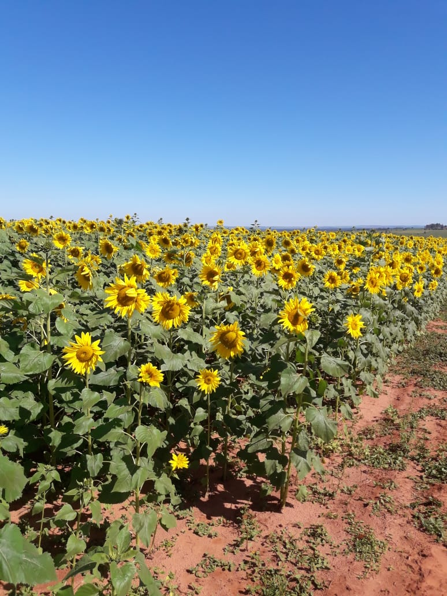
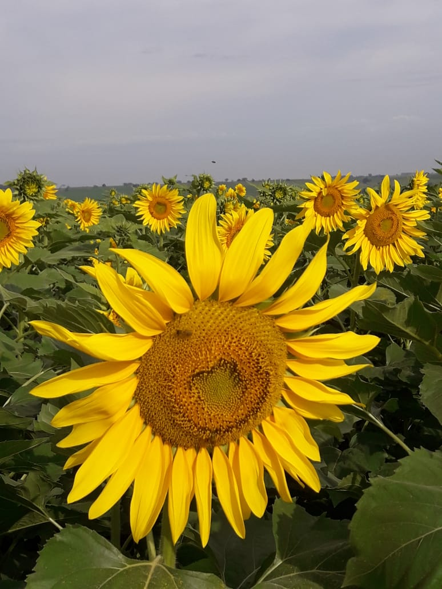
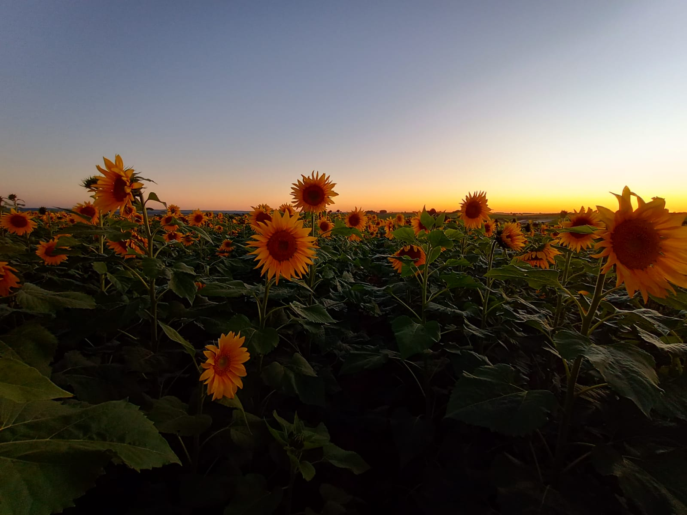
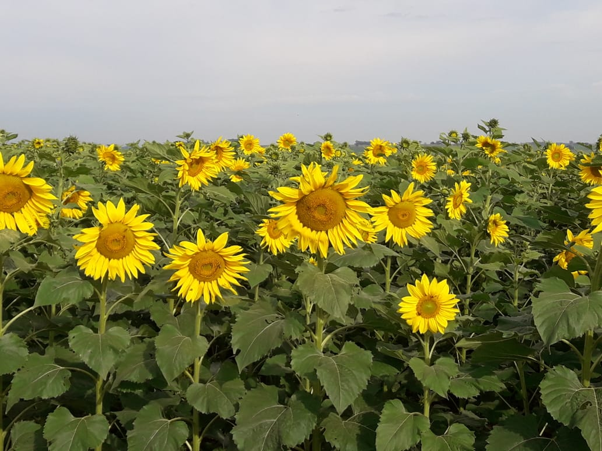
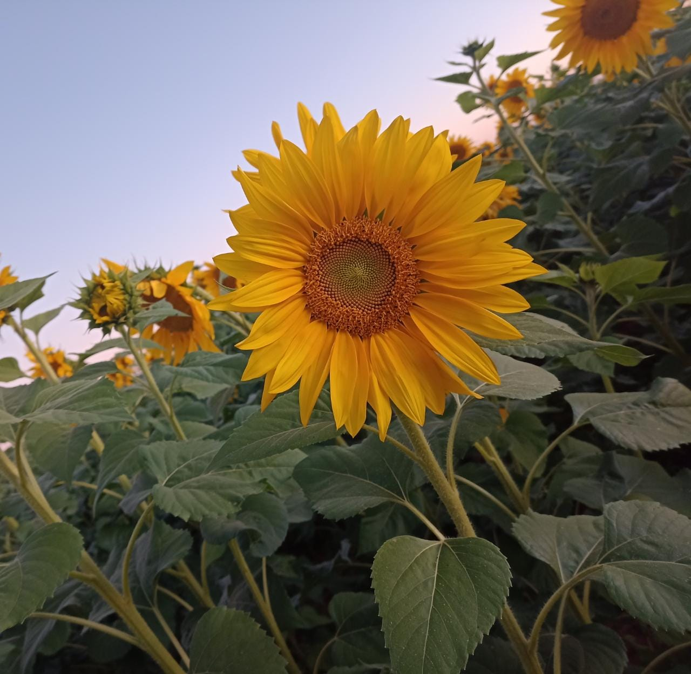
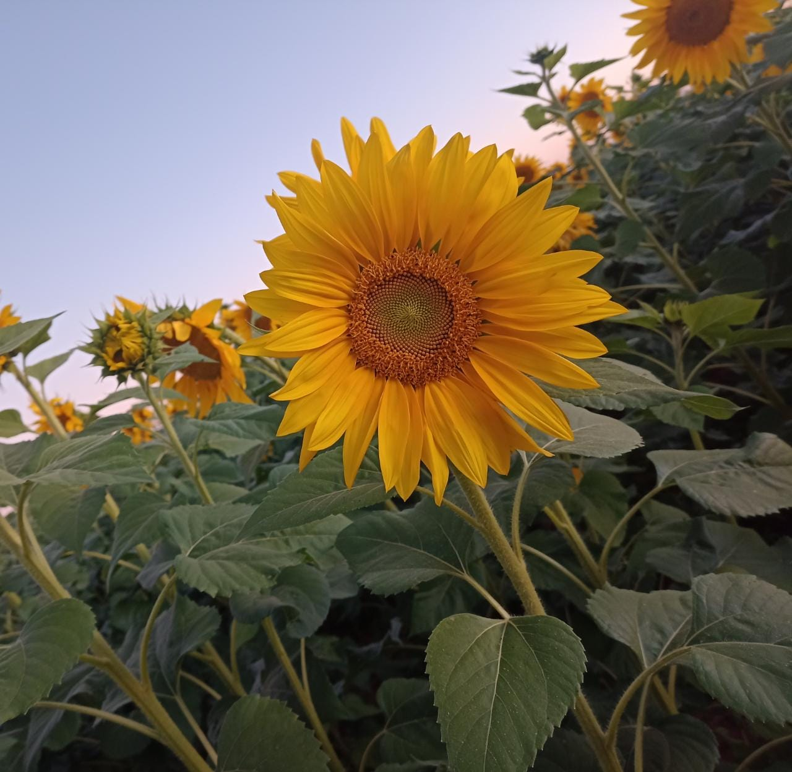

Sobre a São José Agro

Um cultivo que tem ganhado destaque em nossa terra é a plantação de Girassóis, localizado na EST SJV Barraco Zinco- Rural,Sítio Santa Isabel Ramal 18, plantados pelos agricultores Wendel Carlos Miquilin e José Nilton Miquilin, incentivados pela fiha de Wendel Ana Luiza Woehl Miquilin por gostar muito de girassóis e despertar interesse, insistiu ao pai nesse novo cultivo, causando até pequenas discórdias,relata a mãe Mariliz Woehl.E não é que a ideia de Ana Luiza foi bem sucedida, a produtividade se adaptou bem ao nosso clima e região,o plantio foi feito em uma area total de 13 alqueires, a colheita está ocorrendo com os mesmos equipamentos usados na plantação de soja, e a produção é de 3 mil kg por alqueires. Então a promessa é boa e além de tudo está trazendo belas imagens ao nosso distrito.
A seguir você encontra um video algumas fotos fornecidas por nossos colaboradores;
    
